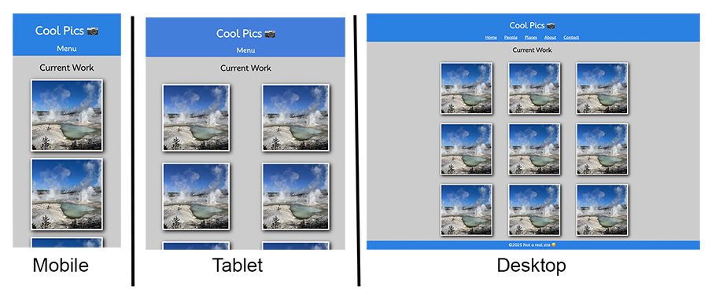

Prove - Responsive Design
-
object-fit
The object-fit CSS property is used to specify how and image or video element should be resized to fit its container.
If we give images a set width and height it can distort an image unless your aspect ratio is exactly right. To avoid this you can use object-fit: cover; to allow the image to keep it's proper aspect ratio but clip the edges to fit the size.
img { width: 300px; height: 300px; object-fit: cover; }
Cool Pics Part 1 - Responsive Menu and Media Queries
File Management:
Your project should be in a folder called 'coolpics'. Make sure you have an index.html page and a separate CSS file.
Instructions:
Include all the proper elements in the head of your page including: meta tags, title, and link to CSS.
The CSS should be mobile first.
Use object-fit: cover; to make the images all square while keeping the proper aspect ratio.
The menu should be responsive and change according to the user's device size.
The mobile menu will hide and show the navigation links in the next prove assignment. The navigation and links will just be hidden on mobile for this prove.
This demonstrates our ponder web page with different layouts according to the device size:
Here is the image needed.

Submit your project
Commit your changes, then push them to GitHub. Wait a few minutes then check to make sure they show on Github pages.
After verifying that your page updated, submit the URL to your page in Ilearn. The URL will look something like this:
https://githubusername.github.io/wdd131/coolpics
Make sure to replace "githubusername" with your actual github username.